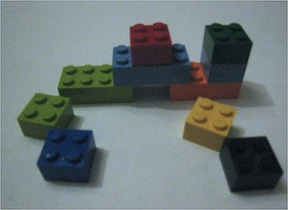

 |
Building Blocks
|
This book assumes that you understood precalculus when you took it. So you used to know how to do things like factoring polynomials, solving high school geometry problems, using trigonometric identities. However, you probably can't remember it all cold. Many useful facts can be looked up (e.g. on the internet) as you need them. This chapter reviews concepts and notation that will be used a lot in this book, as well as a few concepts that may be new but are fairly easy.
You've all seen sets, though probably a bit informally. We'll get back to some of the formalism in a couple weeks. Meanwhile, here are the names for a few commonly used sets of numbers:
Notice that a number is positive if it is greater than zero, so zero is not positive. If you wish to exclude negative values, but include zero, you must use the term ``non-negative.'' In this book, natural numbers are defined to include zero. Notice also that the real numbers contain the integers, so a ``real'' number is not required to have a decimal part. And, finally, infinity is not a number in standard mathematics.
Remember that the rational numbers are the set of fractions $\frac{p}{q}$ where $q$ can't be zero and we consider two fractions to be the same number if they are the same when you reduce them to lowest terms.
The real numbers contain all the rationals, plus irrational numbers such as $\sqrt{2}$ and $\pi$. (Also $e$, but we don't use $e$ much in this end of computer science.) We'll assume that $\sqrt{x}$ returns (only) the positive square root of $x$.
The complex numbers are numbers of the form $a+bi$, where $a$ and $b$ are real numbers and $i$ is the square root of -1. Some of you from ECE will be aware that there are many strange and interesting things that can be done with the complex numbers. We won't be doing that here. We'll just use them for a few examples and expect you to do very basic things, mostly easy consequences of the fact that $i = \sqrt{-1}$.
If we want to say that the variable $x$ is a real, we write $x \in \mathbb{R}$. Similarly $y \not\in \mathbb{Z}$ means that $y$ is not an integer. In calculus, you don't have to think much about the types of your variables, because they are largely reals. In this class, we handle variables of several different types, so it's important to state the types explicitly.
It is sometimes useful to select the real numbers in some limited range, called an interval of the real line. We use the following notation:
The set of all pairs of reals is written $\mathbb{R}^2$. So it contains pairs like $(-2.3,4.7)$. Similarly, the set $\mathbb{R}^3$ contains triples of reals such as ${8, 7.3, -9}$. In a computer program, we implement a pair of reals using an object or struct with two fields.
Suppose someone presents you with a pair of numbers $(x,y)$ or one of the corresponding data structures. Your first question should be: what is the pair intended to represent? It might be
The intended meaning affects what operations we can do on the pairs. For example, if $(x,y)$ is an interval of the real line, it's a set. So we can write things like $z \in (x,y)$ meaning $z$ is in the interval $(x,y)$. That notation would be meaningless if $(x,y)$ is a 2D point or a number.
If the pairs are numbers, we can add them, but the result depends on what they are representing. So $(x,y) + (a,b)$ is $(x+a,y+b)$ for 2D points and complex numbers. But it is $(xb + ya, yb)$ for rationals.
Similarly, suppose we were thinking of multiplying a pair $(x,y)$ by a real number $a$, often written $a(x,y)$. If $(x,y)$ is a 2D vector, the result would be $(ax,ay)$. But this operation wouldn't make sense if $(x,y)$ is an interval of the real line.
Suppose we want to multiply $(x,y)\times (a,b)$ and get another pair as output. There's no obvious way to do this for 2D points. For rationals, the formula would be $(xa,yb)$, but for complex numbers it's $(xa-yb,ya+xb)$.
Stop back and work out that last one for the non-ECE students, using more familiar notation. $(x + yi)(a + bi)$ is $xa + yai + xbi + byi^2$. But $i^2 = -1$. So this reduces to $(xa -yb) + (ya + xb)i$.
Oddly enough, you can also multiply two intervals of the real line. This carves out a rectangular region of the 2D plane, with sides determined by the two intervals.
Suppose that $b$ is any real number. We all know how to take integer powers of $b$, i,e. $b^n$ is $b$ multiplied by itself $n$ times. It's not so clear how to precisely define $b^x$, but we've all got faith that it works (e.g. our calculators produce values for it) and it's a smooth function that grows really fast as the input gets bigger and agrees with the integer definition on integer inputs.
Here are some special cases to know
And some handy rules for manipulating exponents:
\begin{eqnarray*} b^xb^y &=& b^{x+y} \\ a^xb^x &=& (ab)^x \\ (b^x)^y &=& b^{xy} \\ b^{(x^y)} &\not =& (b^x)^y \end{eqnarray*}
Suppose that $b > 1$. Then we can invert the function $y = b^x$, to get the function $x = \log_b y$ (``logarithm of y to the base b''). Logarithms appear in computer science as the running times of particularly fast algorithms. They are also used to manipulate numbers that have very wide ranges, e.g. probabilities. Notice that the log function takes only positive numbers as inputs. In this class, $\log x$ with no explicit base always means $\log_2 x$ because analysis of computer algorithms makes such heavy use of base-2 numbers and powers of 2.
Useful facts about logarithms include: \begin{eqnarray*} b^{\log_b(x)} &=& x \\ \log_b(xy) &=& \log_b x + \log_b y \\ \log_b(x^y) &=& y\log_b x \\ \log_b x &=& \log_a x \log_b a \end{eqnarray*}
In the change of base formula, it's easy to forget whether the last term should be $\log_b a$ or $\log_a b$. To figure this out on the fly, first decide which of $\log_b x$ and $\log_a x$ is larger. You then know whether the last term should be larger or smaller than one. One of $\log_b a$ and $\log_a b$ is larger than one and the other is smaller: figure out which is which.
More importantly, notice that the multiplier to change bases is a constant, i.e doesn't depend on $x$. So it just shifts the curve up and down without really changing its shape. That's an extremely important fact that you should remember, even if you can't reconstruct the precise formula. In many computer science analyses, we don't care about constant multipliers. So the fact that base changes simply multiply by a constant means that we frequently don't have to care what the base actually is. Thus, authors often write $\log x$ and don't specify the base.
In principle, you probably know the rules for manipulating formulas that involve inequalities. However, it is a place where students frequently make mistakes, especially when the formulas are complex in other ways. Therefore, be careful and work step by step.
When writing formulas involving inequalities, make sure that your inequalities all go in the same direction. Do not try to chain inequalities that aren't going in the same direction. For example, if you know that $a < b$ and $c < b$, you cannot conclude anything about the relationship between $a$ and $c$. You can add two inequalities together, e.g. if $a < b$ and $c < d$, then $a+c < b+d$, but the two inequalities must be going in the same direction.
If you multiply both sides of an inequality by a constant, the direction will switch if the constant is negative. So if $a < b$, then $-5b < -5 a$. To safely subtract one inequality from another, use two steps. For example
Do not try subtracting the two equations in one step. It's very likely you'll write $a -c < b -d $, which isn't correct.
If all four numbers are positive, then you can multiply $a < b$ and $c < d$ to get $ac < bd$. Similarly, if $a$ and $b$ are both positive, then $a < b$ implies that $1/b < 1/a$. Notice that we need to reverse the direction of the inequality when we invert the numbers.
It is hard to remember how some ofthese rules generalize to the case when some of the numbers may be negative. You may need to build up your new equation step by step and/or do separate derivations for the positive and negative cases. For example.
Similarly, keep an eye out for the possibility that one of your numbers might be zero, especially when manipulating inequalities. For example,
As a general thing, multiplying by zero loses information and results in algebra that works in one direction but not if you reverse it. For example, if you know that $a=b$, then $ac = bc$. However, this doesn't work in the other direction. Suppose you know that $ac = bc$. In order to divide both sides by $c$ to get $a=b$, you must first make sure that $c$ cannot be zero.
When a formula contains an absolute value, it's frequently necessary to break it up into two separate inequalities. Some handy rules are
If $a$ is negative, the equation $|x| > a$ doesn't give you any useful information about $x$.
In the familiar base-10 (aka decimal) number system, we have 10 different digits and each digit is multiplied by the power of 10 corresponding to its place in the digit sequence. So the value of the digit sequence 7315 is $$(7 \cdot 10^3) + (3\cdot 10^2) + (1 \cdot 10) + 5$$
We can set similar systems with other choices for the base. For example, in base 3 numbers, we have three different digits (0, 1, 2) and we multiply each digit by a power of three. So to convert 2102 to decimal, we compute $$(2 \cdot 3^3) + (1\cdot 3^2) + (0 \cdot 3) + 2 = (2 \cdot 27) + (1\cdot 9) + (0 \cdot 3) + 2 = 65$$
The hexadecimal (or hex) system uses 16 digits: the ten decimal digits plus the letters A through F. So the digit sequence 2E3 has decimal value $$(2 \cdot 16^2) + (14\cdot 16) + 3 = (2 \cdot 256) + (14 \cdot 16) + 3 = 512 + 224 + 3 = 739$$
Base-2 numbers are widely used in low-level computer programming. You are most likely to see hex numbers used when writing color values, e.g. in html authoring. Bases other than 2, 10, and 16 appear primarily in math/theory exercises.
The factorial function may or may not be familiar to you, but is easy to explain. Suppose that $k$ is any positive integer. Then $k$ factorial, written $k!$, is the product of all the positive integers up to and including $k$. That is $$k! = 1 \cdot 2 \cdot 3 \cdot \ldots \cdot (k-1) \cdot k$$
For example, $5! = 1\cdot 2 \cdot 3 \cdot 4 \cdot 5 = 120$. $0!$ is defined to be 1.
Suppose that we have a set $S$ containing $n$ objects, all different. There are $n!$ permutations of these objects, i.e. $n!$ ways to arrange the objects into a particular order. There are $\frac{n!}{k!(n-k)!}$ ways to choose $k$ (unordered) elements from $S$. The quantity $\frac{n!}{k!(n-k)!}$ is frequently abbreviated as ${n \choose k}$, pronounced ``n choose k.''
The $\max$ function returns the largest of its inputs. For example, suppose we define $f(x) = \max(x^2,7)$. Then $f(3) = 9$ but $f(2) = 7$. The $\min$ function is similar.
The floor and ceiling functions are heavily used in computer science, though not in many areas other of science and engineering. Both functions take a real number $x$ as input and return an integer near $x$. The floor function returns the largest integer no bigger than $x$. In other words, it converts $x$ to an integer, rounding down. This is written $\lfloor x \rfloor$. If the input to floor is already an integer, it is returned unchanged. Notice that floor rounds downward even for negative numbers. So: $\lfloor 3.75 \rfloor = 3$ $\lfloor 3 \rfloor = 3$ $\lfloor -3.75 \rfloor = -4$
The ceiling function, written $\lceil x \rceil$, is similar, but rounds upwards. For example: $\lceil 3.75 \rceil = 4$ $\lceil 3 \rceil = 3$ $\lceil -3.75 \rceil = -3$
Most programming languages have these two functions, plus a function that rounds to the nearest integer and one that ``truncates'' i.e. rounds towards zero. Round is often used in statistical programs. Truncate isn't used much in theoretical analyses.
If $a_i$ is some formula that depends on $i$, then $$\sum_{i=1}^n a_i = a_1 + a_2 + a_3 + \ldots + a_n$$
For example $$\sum_{i=1}^n \frac{1}{2^i} = \frac{1}{2} + \frac{1}{4} + \frac{1}{8} \ldots + \frac{1}{2^n}$$
Products can be written with a similar notation, e.g. $$\prod_{k=1}^n \frac{1}{k} = \frac{1}{1}\cdot \frac{1}{2} \cdot \frac{1}{3} \cdot \ldots \cdot \frac{1}{n}$$
Certain sums can be re-expressed ``in closed form'' i.e. without the summation notation. For example: $$\sum_{i=1}^n \frac{1}{2^i} = 1 - \frac{1}{2^n}$$
This formula is a specific example of a pattern called a geometric series. More generally, for any real number $r \neq 1 $, we have $$ \sum_{k=0}^n r^k = \frac{r^{n+1} - 1}{r - 1}$$
For example, $\displaystyle \sum_{k=0}^n 2^k = 2^{n+1} - 1$. In Calculus, you may have seen infinite versions of geometric series formulas. In this class, we're always dealing with finite sums, not infinite ones.
If you modify the start value, the closed form must be adapted to add/subtract the values of the extra/missing terms. For example, $\displaystyle \sum_{i=0}^n \frac{1}{2^i}$ starts with the $i=0$ term. So $\displaystyle \sum_{i=0}^n \frac{1}{2^i} = 2 - \frac{1}{2^n}$. Always be careful to check where your summation starts.
Many reference books have tables of useful formulas for summations that have simple closed forms. We'll see them again when we cover mathematical induction and see how to formally prove that they are correct.
Only a very small number of closed forms need to be memorized. Aside from the geometric series formula, you should also know this closed form: $$\sum_{i=1}^n i = \frac{n(n+1)}{2}$$
Here's one way to convince yourself it's right. On graph paper, draw a box $n$ units high and $n+1$ units wide. Its area is $n(n+1)$. Fill in the leftmost part of each row to represent one term of the summation: the left box in the first row, the left two boxes in the second row, and so on. This makes a little triangular pattern which fills exactly half the box.
The special symbol $\epsilon$ is used for the string containing no characters, which has length 0. Zero-length strings may seem odd, but they appear frequently in computer programs that manipulate text data. For example, a program that reads a line of input from the keyboard will typically receive a zero-length string if the user types ENTER twice.
We specify concatenation of strings, or concatenation of strings and individual characters, by writing them next to each other. For example, suppose that $\alpha = \texttt{blue}$ and $\beta = \texttt{cat}$. Then $\alpha\beta$ would be the string $\texttt{bluecat}$ and $\beta\texttt{s}$ would be the string $\texttt{cats}$.
A bit string is a string consisting of the characters 0 and 1. If $A$ is a set of characters, then $A^*$ is the set of all (finite-length) strings containing only characters from $A$. For example, if $A$ contains all lower-case alphabetic characters, then $A^*$ contains strings like $\texttt{e}$, $\texttt{onion}$, and $\texttt{kkkkmmmmmbb}$. It also contains the empty string $\epsilon$.
Sometimes we want to specify a pattern for a set of similar strings. We often use a shorthand notation called regular expressions. These look much like normal strings, but we can use two operations:
Parentheses are used to show grouping. So, for example, $\texttt{ab}^*$ specifies all strings consisting of an $\texttt{a}$ followed by zero or more copies of $\texttt{b}$. For example $\texttt{a}$, $\texttt{ab}$, $\texttt{abb}$, and so forth. $\texttt{c}(\texttt{b}\mid \texttt{a})^*\texttt{c}$ specifies all strings consisting of one $\texttt{c}$, followed by zero or more characters that are either $\texttt{a}$'s or $\texttt{b}$'s, followed one $\texttt{c}$. E.g. $\texttt{cc}$, $\texttt{cac}$, $\texttt{cbbac}$, and so forth.
Mathematical notation is not entirely standardized and has changed over the years, so you will find that different subfields and even different individual authors use slightly different notation. These ``variation in notation'' sections tell you about synonyms and changes in notation that you are very likely to encounter elsewhere. Always check carefully which convention an author is using. When doing problems on homework or exams for a class, follow the house style used in that particular class.
In particular, authors differ as to whether zero is in the natural numbers. Moreover, $\sqrt{-1}$ is named $j$ over in ECE and physics, because $i$ is used for current. Outside of computer science, the default base for logarithms is usually $e$, because this makes a number of continuous mathematical formulas work nicely (just as base 2 makes many computer science formulas work nicely).
In standard definitions of the real numbers and in this book, infinity is not a number. People are sometimes confused because $\infty$ is sometimes used in notation where numbers also occur, e.g. in defining limits in calculus. There are non-standard number systems that include infinite numbers. And points at infinity are sometimes introduced in discussions of 2D and 3D geometry. We won't make use of such extensions.
Regular expressions are quite widely used in both theory and practical applications. As a result there are many variations on the notation. There are also other operations that make it easy to specify a wider range of patterns.